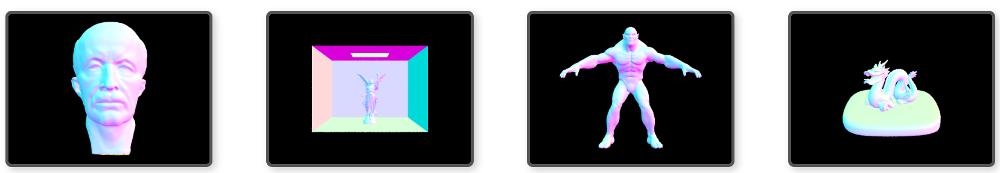
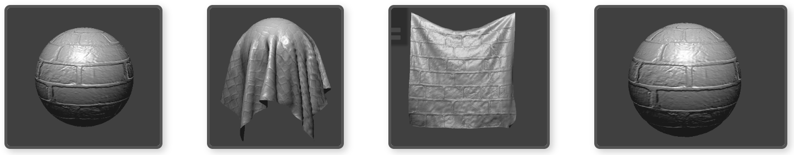
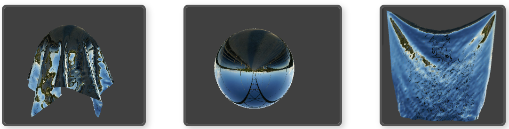
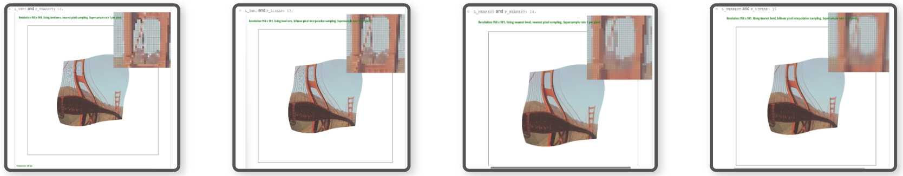
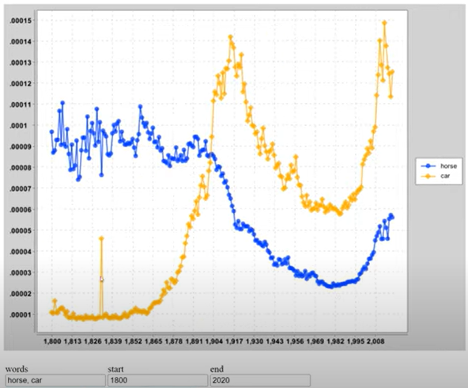

UC Berkeley Computer Science and Mathematics student
About Me
Hi! I'm a soon-to-be graduate of UC Berkeley, where I'm completing a double major in Mathematics and Computer Science, plus a minor in Spanish. I have a deep love for math, particularly pure mathematics like mathematical logic and computation theory, and I enjoy applying these concepts to complex problems in computing.
I find the most rewarding experiences come from working in teams where collaboration sparks innovation. Throughout my academic journey, I’ve had the chance to lead, teach, and learn from others, which drives my passion for continuous growth in the tech world.
Outside the realm of code, I immerse myself in the arts. Whether it’s performing in a classical chorus, creating visual art, or learning new crafts like sewing and knitting, these activities keep my creativity flowing and influence how I approach problem-solving in software.
I’m excited to bring my skills and enthusiasm to a software development role, where I can continue learning and contribute to impactful projects. Let’s build something great together!
note: some of the demos of the below projects are under construction!
Action Map Website Development
Jul 2024 - Aug 2024 (Associated with University of California, Berkeley)
CS 169A: Software Engineering– Ruby on Rails, JavaScript, HTML
Served as Scrum Master, collaborating with cross-functional team members to oversee Agile development of a Ruby on Rails application that allowed users to search for political representatives and view real-time news.
Developed key features, including building MVC components, creating UI views, handling database migrations, and integrating the Google Civic Information API for real-time data.
Employed Test-Driven Development (TDD) practices, using Cucumber/Capybara to ensure high test coverage.
Skills: Ruby on Rails, JavaScript, HTML, Team Management, Web Development
Computer Graphics Projects
Jan 2024 - Apr 2024 (Associated with University of California, Berkeley)
CS 184: Computer Graphics – C++
Project 1: Applied foundational graphics rendering techniques like triangle rasterization, anti-aliasing, affine transformations, and texture mapping.
Project 2: Engineered surface modeling solutions using Bézier curves and mesh processing, focusing on accurate surface representation.
Project 3: Designed and optimized a path tracing algorithm to simulate realistic light interactions.
Project 4: Developed a comprehensive cloth simulation system with advanced shaders for realistic rendering.




Skills: C++, Computer Graphics
Secure File Storing and Sharing Platform
Mar 2024 - Apr 2024 (Associated with University of California, Berkeley)
CS 161: Computer Security– Golang
Designed and implemented a secure file sharing platform enabling user login, file upload, and controlled sharing of files with other users.
Encrypted all data in memory, protecting against potential attackers with memory access.
Managed cryptographic key sharing between users to securely control file access and secure revocation of access.
Enabled detection of tampering in memory, ensuring integrity of stored data
Created Ginkgo tests to validate confidentiality, integrity, authentication, and authorization.
Skills: Go, Cybersecurity
Tiger Team: Identifying Web Server and Codebase Vulnerabilities
Jan 2024 - Apr 2024 (Associated with University of California, Berkeley)
CS 161: Computer Security – x86, SQL
Identified and exploited vulnerabilities in a provided C codebase, including improper buffer bounds checks and mishandling of signed and unsigned integers, leading to successful memory manipulation and shellcode execution.
Utilized GDB to determine critical memory address and constructed custom shellcode injections to bypass security mechanisms like ASLR and canaries
Discovered and exploited a provided webserver’s vulnerabilities, including SQL injection, stored XSS, and path traversal attacks, to gain unauthorized access and retrieve sensitive information from web application, demonstrating my understanding of web security flaws.
Provided detailed recommendations for mitigating these vulnerabilities, such as implementing parameterized queries, input sanitization, and enforcing stricter character restrictions, to enhance the security posture of the web application
Skills: x86 Assembly, SQL, Cyber Defense
Optimized Matrix Convolution
Apr 2023 - May 2023 (Associated with University of California, Berkeley)
CS 61C: Great Ideas of Computer Architecture – C Programming
Implemented and optimized the matrix convolution operation using SIMD, OpenMP, and OpenMPI parallelization.
Ranked #7 in speed among over 600 students.
Skills: C, SIMD, OpenMP, OpenMPI
Build CPU
Mar 2023 - Apr 2023 (Associated with University of California, Berkeley)
CS 61C: Great Ideas of Computer Architecture – RISC-V, Logisim
Used Logisim to build a CPU that runs Risc-V assembly language instructions.
Implemented Arithmetic Logic Unit (ALU), a register file, an immediate generator, functional data paths and control logic for each instruction type, instruction fetching decoding and execution, a branch comparator, control for branching hazards.
Skills: RISC-V, Logisim, Computer Hardware
Build Your Own World
Nov 2022 - Dec 2022 (Associated with University of California, Berkeley)
CS 61B: Data Structures – Java
Created an algorithm, using Java’s StdDraw package, that pseudo-randomly generates 2D worlds of rooms connected by hallways, in collaboration with a team member.
Allowed user to input any set of numbers which the algorithm used for generation. Inputting the same number again generates the same world.
Implemented the following features: select the avatar, explore the world, save world, load previously saved world, and toggle between full and restricted vision.
Skills: Data Structures, Java
Zero Approximation Algorithm
Nov 2022 (Associated with University of California, Berkeley)
Math 128a: Numerical Analysis – MATLAB
Independently constructed an algorithm that approximates the zero of any equation.
Applied the Zeroin Method which is a combination of the inverse quadrature method and the bisection method.
Skills: MATLAB
NGram Viewer
Oct 2022 (Associated with University of California, Berkeley)
CS 61B: Data Structures – Java
Developed an object-oriented program to analyze historical word usage data, displaying frequency and relationships through an interactive user interface.
Designed and optimized graph structures and algorithms to meet run time requirements, and model relationships between words, ensuring accuracy through custom JUnit tests.

Skills: Java, Data Structures
Contact
Feel free to reach out via email or check out my LinkedIn: